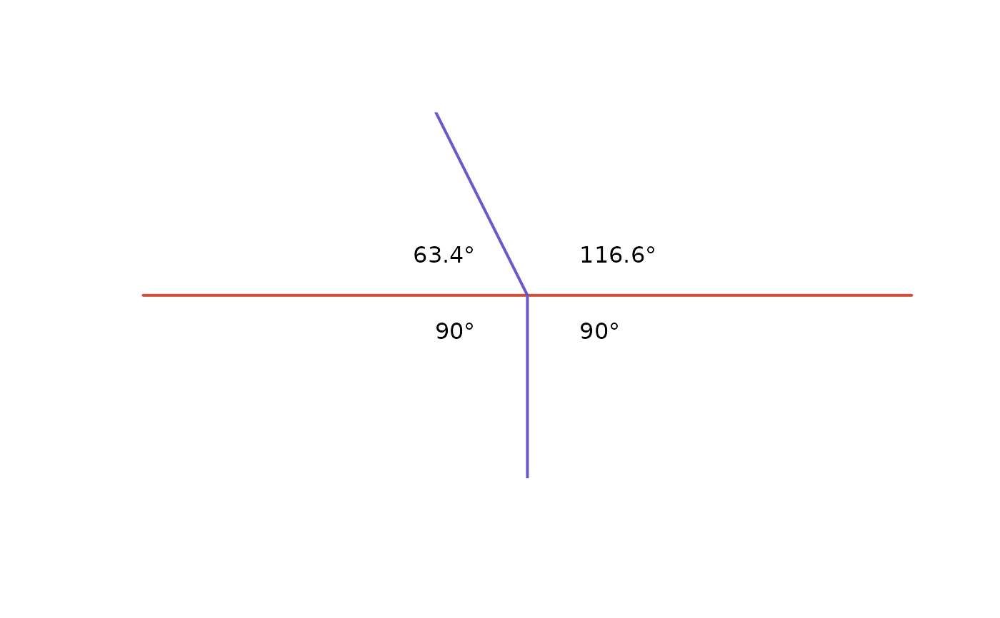

Calculate the minimum and maximum angles between two sf LINESTRING objects
desplim_angles.RdFunction for calculating the minimum and maximum angles
between two intersecting sf MULTILINESTRING or LINESTRING objects.
Value
An sf object with the geometries from input_lines with added
columns containing the values of the minimum and maximum angle.
Details
If the input and reference lines are already cast to substring,
the function can be sped up, notably by setting cast_substring to FALSE
for larger geometries.
Examples
# Create input and reference lines
input_line <- sf::st_linestring(matrix(
c(-1, 0, 0, 0, 1, 0),
ncol = 2,
byrow = TRUE
))
ref_line <- sf::st_linestring(matrix(
c(0, -1, 0, 0, -0.5, 1),
ncol = 2,
byrow = TRUE
))
input_sf <- sf::st_sf(geom = sf::st_sfc(input_line), crs = 32613)
ref_sf <- sf::st_sf(geom = sf::st_sfc(ref_line), crs = 32613)
# Calculate angles
angles_sf <- desplim_angles(input_lines = input_sf, reference_lines = ref_sf)
print(angles_sf)
#> Simple feature collection with 2 features and 2 fields
#> Geometry type: LINESTRING
#> Dimension: XY
#> Bounding box: xmin: -1 ymin: 0 xmax: 1 ymax: 0
#> Projected CRS: WGS 84 / UTM zone 13N
#> geometry min_angle max_angle
#> 1 LINESTRING (-1 0, 0 0) 63.43495 90.0000
#> 2 LINESTRING (0 0, 1 0) 90.00000 116.5651
# Plot
plot(sf::st_geometry(input_sf), col = "tomato3", lwd = 2)
plot(sf::st_geometry(ref_sf), add = TRUE, col = "slateblue3", lwd = 2)
text(-0.1, 0.1, paste0(round(angles_sf$min_angle[[1]], 1), "°"), pos = 2)
text(-0.1, -0.1, paste0(round(angles_sf$max_angle[[1]], 1), "°"), pos = 2)
text(0.1, 0.1, paste0(round(angles_sf$max_angle[[2]], 1), "°"), pos = 4)
text(0.1, -0.1, paste0(round(angles_sf$min_angle[[2]], 1), "°"), pos = 4)
